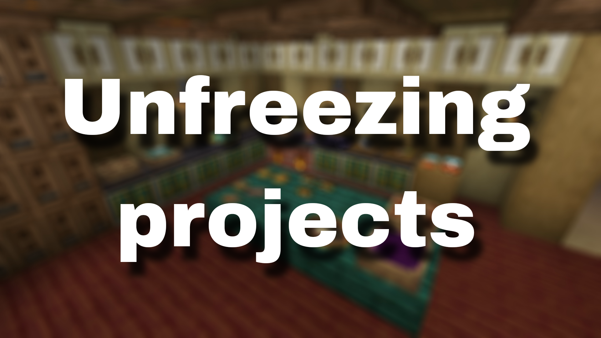
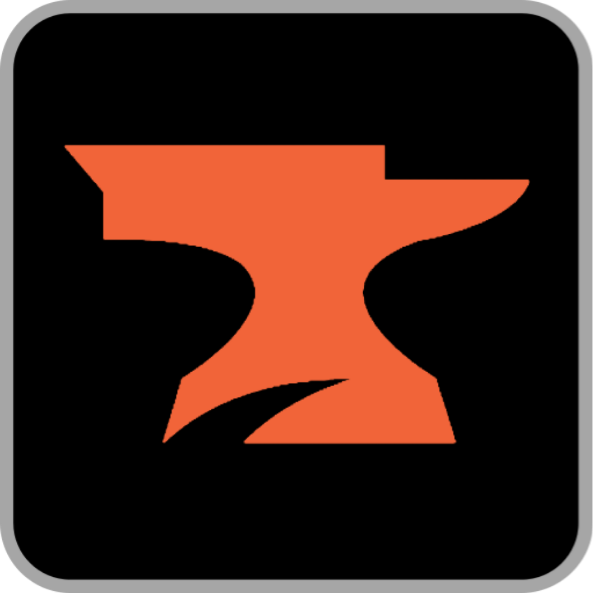

<!DOCTYPE html>
<html lang="en">
<head>
  <link rel="icon" href="../img/themes/active/favicon.png">
  <title>Unfreezing projects | Blog | Donne431</title>
  <meta name="viewport" content="width=device-width, initial-scale=1, maximum-scale=1" />
  <meta name="title" content="Unfreezing projects | Blog | Donne431">
  <meta name="description" content="Welcome to my website! I am Donne431, just a guy, who love made a modifications for games. I'm 16 years old, and I'm from Crimea, Russia (demi-island washed by the Black and Azov Sea). I also like to create almost any content for Minecraft, that is: mods, maps, resource packs, servers.">
  <meta name="keywords" content="Minecraft, Forts, Mods, Resourcepacks, Datapacks, Donne431">
  <meta name="theme-color" content="#4bb4f1">


  <script src="https://code.jquery.com/jquery-3.3.1.min.js"></script>
  <script src="https://cdn.jsdelivr.net/npm/handlebars@latest/dist/handlebars.js"></script>
  <script src="https://mcapi.us/scripts/minecraft.min.js"></script>
  <script src="../js/main.js"></script>
  <script src="../config.js"></script>
  <script src="../js/lightbox.min.js"></script>

  <script>tosAgreed = true</script>

  <link rel="stylesheet" href="https://cdnjs.cloudflare.com/ajax/libs/font-awesome/6.7.1/css/all.min.css"/>
  <link rel="stylesheet" href="../css/style.css">
  <link rel="stylesheet" href="../css/blog.css">
  <link rel="stylesheet" href="../config.css">
  <link href="../css/lightbox.css" rel="stylesheet" media="all">

</head>


<body>

  <div id="target"></div>

  <script id="template" type="text/x-handlebars-template">

  <header>
    <div class="hero" id="hero">
      <a href="#!"><h1 style="padding-top: 3%;"></h1></a>
    <p> </p>
    <div class="news-card" align="center">
      <a href="../" class="btn"><i class="fa-solid fa-house"></i> Home</a>
      <a href="../blog" class="btn"><i class="fa-solid fa-newspaper"></i> Blog</a>
      <a href="#links" class="btn"><i class="fa-solid fa-share"></i> Links</a>
    </div>
    <p> </p>
    </div>
  </header>

  <section class="dark" id="blog">
    <h1><i class="fa-solid fa-newspaper"></i> Blog</h1>
    <div id="news">
    <div class="news-card" align="center">
    <a>MISC</a><br>
    <a href="../img/blog/unfreezing-projects/preview.png" data-lightbox="roadtrip"></a>
    <h1 align="center">Unfreezing projects</h1>
    <i>01.06.2025, 18:20</i><br>
    </div>
    <p>
    Hello to all the readers of this post!<br><br>

    It's been a week (well almost) since the projects were frozen, and now it's time to unfreeze them, work on the main projects ( This site and  Ice and Fire Delight) has started again! However, I want to tell you right away that there will probably be a freeze for a few weeks again somewhere in the middle of June (I may not have passed one of my exams :( ). <br><br>
    
    About the 0.2.4 update for  Ice and Fire Delight, I've already started working on it again, I'm not so sure if it will be the biggest update in the mod's history, but it will still be pretty big. <br><br>
   
    About other projects (except for the  website), I can say this, I definitely want to continue working on one of the most promising projects at the moment and that's  AE2 Guide: Russian Localization, I can't say anything about the other projects, because I don't think I have enough time for them, I already have 2 big projects to do:  Ice and Fire Delight update and  AE2 Guide: Russian Localization. <br> <br>


    
    <!--
    Привет всем читателям этого поста! <br> <br>
    
    Вот и прошла неделя (ну почти) с момента заморзки проектов и вот настало время их разморозить, работа над основными проектами ( Данный сайт и  Ice and Fire Delight) вновь началась! Однако, хочу сразу сказать, что возможно где-то в середине июня снова будет заморозка на несколько недель (Я возможно не сдал один из экзаменов :( ). <br><br>
    
    Насчёт обновления 0.2.4 для  Ice and Fire Delight, я уже вновь начал работу над ним, я уже не так уверен, что оно будет крупнейшим за историю мода, но всё же оно будет довольно большим. <br> <br>
   
    Насчёт иных проектов (ну за исключением  сайта), я могу сказать так, я точно хочу продолжить работу над одним из самых перспективных проектов на данный момент и это  AE2 Guide: Russian Localization, насчёт уже остальных проектов сказать ничего не могу, так как не думаю, что у меня хватит время на них, мне итак надо сделать 2 крупных проекта: обновление для  Ice and Fire Delight и  AE2 Guide: Russian Localization. <br> <br>
    -->


    </p>
    <p align="center"><i class="fa-solid fa-user"></i> Donne431 (Author)</p>
    </div>
  </section>
  <section class="dark">
    <div class="news-card" align="center">
    <a href="../blog/freezing-all-projects_24.05.2025.html" class="btn2"><i class="fa-solid fa-arrow-left"></i> Previous post</a>
    <a href="../blog" class="btn2"><i class="fa-solid fa-newspaper"></i> Back to Blog</a>
    <!--<a href="../blog/unfreezing-projects.html" class="btn2"><i class="fa-solid fa-arrow-right"></i> Next post</a>-->
    </div>
  </section>

  <section class="light">
    <h1><i class="fa-solid fa-share"></i> Links</h1>
    <div id="links" align="center">
      <a href="https://discord.gg/NQBhQRDEhF"></a>
      <a href="https://www.curseforge.com/members/donne431/projects"></a>
      <a href="https://modrinth.com/user/Donne431"></a>
      <a href="https://github.com/Donne431"></a>
      <a href="https://www.donationalerts.com/r/donne431"></a>
    </div>
  </section>

  <footer>
    <a>&copy; {{server_port}} {{server_name}}. All Rights Reserved.</br>{{server_name}} is not affiliated with or endorsed by Mojang Studios or Microsoft<br>{{server_ip}}</a>
    <a></a>
    
  </footer>
  </script>
  <script src="../js/license.js"></script>

</body>
</html>
